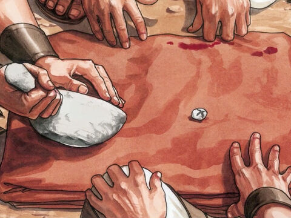

The Crucifixion
And as they led him away, they laid hold upon one Simon, a Cyrenian, coming out of the country, and on him they laid the cross, that he might bear it after Jesus.
And there followed him a great company of people, and of women, which also bewailed and lamented him.
But Jesus turning unto them said, Daughters of Jerusalem, weep not for me, but weep for yourselves, and for your children.
For, behold, the days are coming, in the which they shall say, Blessed are the barren, and the wombs that never bare, and the paps which never gave suck.
Then shall they begin to say to the mountains, Fall on us; and to the hills, Cover us.
For if they do these things in a green tree, what shall be done in the dry?
Luka 23:26-31
Where they crucified him, and two other with him, on either side one, and Jesus in the midst.
And Pilate wrote a title, and put it on the cross. And the writing was Jesus Of Nazareth The King Of The Jews.
This title then read many of the Jews: for the place where Jesus was crucified was nigh to the city: and it was written in Hebrew, and Greek, and Latin.
Then said the chief priests of the Jews to Pilate, Write not, The King of the Jews; but that he said, I am King of the Jews.
Pilate answered, What I have written I have written.
John 19:18-22
Then said Jesus, Father, forgive them; for they know not what they do. And they parted his raiment, and cast lots.
Luke 23:34
Then the soldiers, when they had crucified Jesus, took his garments, and made four parts, to every soldier a part; and also his coat: now the coat was without seam, woven from the top throughout.
They said therefore among themselves, Let us not rend it, but cast lots for it, whose it shall be: that the scripture might be fulfilled, which saith, They parted my raiment among them, and for my vesture they did cast lots. These things therefore the soldiers did.
John 19:23-24
And the people stood beholding. And the rulers also with them derided him, saying, He saved others; let him save himself, if he be Christ, the chosen of God.
And the soldiers also mocked him, coming to him, and offering him vinegar,
And saying, If thou be the king of the Jews, save thyself.
And a superscription also was written over him in letters of Greek, and Latin, and Hebrew, This Is The King Of The Jews.
And one of the malefactors which were hanged railed on him, saying, If thou be Christ, save thyself and us.
But the other answering rebuked him, saying, Dost not thou fear God, seeing thou art in the same condemnation?
And we indeed justly; for we receive the due reward of our deeds: but this man hath done nothing amiss.
And he said unto Jesus, Lord, remember me when thou comest into thy kingdom.
And Jesus said unto him, Verily I say unto thee, Today shalt thou be with me in paradise.
Luke 23:35-43
Now there stood by the cross of Jesus his mother, and his mother's sister, Mary the wife of Cleophas, and Mary Magdalene.
When Jesus therefore saw his mother, and the disciple standing by, whom he loved, he saith unto his mother, Woman, behold thy son!
Then saith he to the disciple, Behold thy mother! And from that hour that disciple took her unto his own home.
John 19:25-27
- 